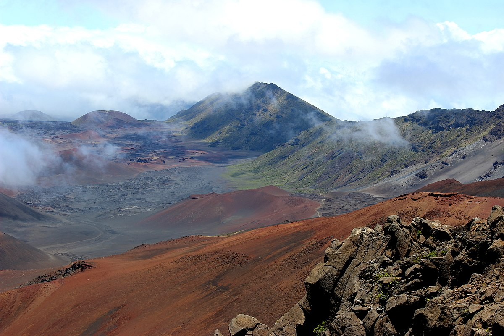
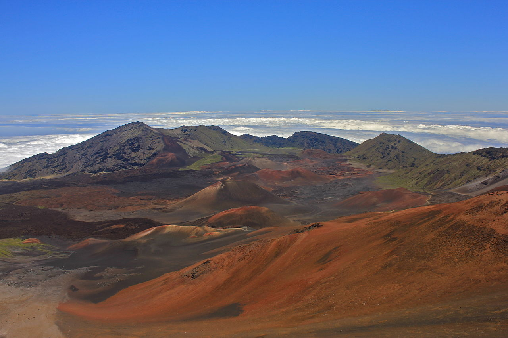

Things to do
when in hawaii
Some line describing the places
Big Island

The Big Island is the largest and most volcanically active of all Hawaiian islands.
It is the largest island of the United States with a total surface of 4,029 square
miles (10,433 square kilometers)! Its surface area is also greater than that of all other
Hawaiian island combined. Our hands-down favorite beaches on the Big Island are Hapuna and
Mauna Kea beach (white sand), Punaluʻu beach (black sand + turtles!)
Hawaii Volcanoes National Park

Big Island is the largest island in the archipelago, as well as the most recently formed,
and Hawaii Volcanoes National Park is the best place in Hawaii to see the forces at work
beneath the Earth’s crust. Here you can take in dark, sprawling lava fields strewn with
boulders,
steaming craters and cinder cones, and occasionally aglow with bubbling molten lava.
Pearl Harbor
I couldn’t pass through Oahu without visiting the place where the USA’s involvement in World
War II
first began. It was a moving experience visiting the site and seeing the names of more than
2,400
people who lost their lives engraved on the memorial plaque. While three of the sunken
battleships
were raised and returned to service, the USS Arizona still resides in its watery grave. Its
memorial
is built over the wreckage, so you can look down and see the submerged ship. Throughout the site
are
exhibits, displays and memorials related to the events leading up to the fateful day, what
happened
during the attack, and the people affected on both sides.